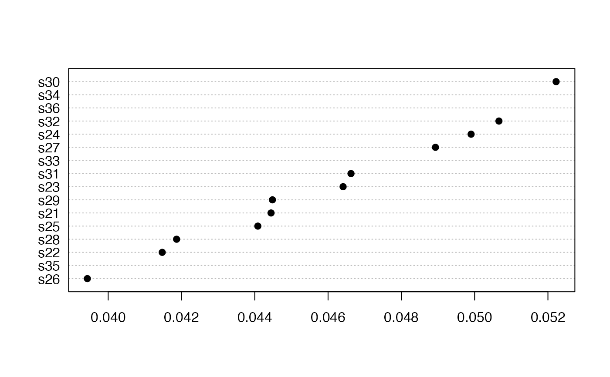

Calculates the Seasonal or Regional Kendall test of trend significance, including an estimate of the Sen slope.
seaKen( x, plot = FALSE, type = c("slope", "relative"), order = FALSE, pval = 0.05, mval = 0.5, pchs = c(19, 21), ... )
| x | A numeric vector, matrix or data frame made up of seasonal time series |
|---|---|
| plot | Should the trends be plotted when x is a matrix or data frame? |
| type | Type of trend to be plotted, actual or relative to series median |
| order | Should the plotted trends be ordered by size? |
| pval | p-value for significance |
| mval | Minimum fraction of seasons needed with non-missing slope estimates |
| pchs | Plot symbols for significant and not significant trend estimates, respectively |
| ... | Other arguments to pass to plotting function |
A list of the following if x is a vector: seaKen
returns a list with the following members:
Sen slope
Sen slope as percent of mean
significance of slope
for each season, the fraction missing of slopes connecting first and last 20% of the years
The Seasonal Kendall test (Hirsch et al. 1982) is based on the Mann-Kendall
tests for the individual seasons (see mannKen for additional
details). p-values provided here are not corrected for serial
correlation among seasons.
If plot = TRUE, then either the Sen slope in units per year
(type = "slope") or the relative slope in fraction per year
(type = "relative") is plotted. The relative slope is defined
identically to the Sen slope except that each slope is divided by the first
of the two values that describe the slope. Plotting the relative slope is
useful when the variables in x are always positive and have different
units.
The plot symbols indicate, respectively, that the trend is statistically
significant or not. The plot can be customized by passing any arguments used
by dotchart such as xlab, as well as graphical
parameters described in par.
If mval or more of the seasonal slope estimates are missing, then
that trend is considered to be missing. The seasonal slope estimate
(mannKen), in turn, is missing if half or more of the possible
comparisons between the first and last 20% of the years are missing.
The function can be used in conjunction with mts2ts to calculate a
Regional Kendall test of significance for annualized data, along with a
regional estimate of trend (Helsel and Frans 2006). See the examples below.
Helsel, D.R. and Frans, L. (2006) Regional Kendall test for trend. Environmental Science and Technology 40(13), 4066-4073.
Hirsch, R.M., Slack, J.R., and Smith, R.A. (1982) Techniques of trend analysis for monthly water quality data. Water Resources Research 18, 107-121.
# Seasonal Kendall test: chl <- sfbayChla # monthly chlorophyll at 16 stations in San Francisco Bay seaKen(sfbayChla[, 's27']) # results for a single series at station 27#> $sen.slope #> [1] 0.1083333 #> #> $sen.slope.rel #> [1] 0.04893086 #> #> $p.value #> [1] 1.117981e-25 #> #> $miss #> [1] 0.083 #>seaKen(sfbayChla) # results for all stations#> sen.slope sen.slope.rel p.value miss #> s21 0.09672840 0.04444444 9.258533e-25 0.167 #> s22 0.08700000 0.04147465 1.837197e-20 0.167 #> s23 0.09925824 0.04641062 2.285817e-22 0.083 #> s24 0.09682540 0.04990329 1.651685e-29 0.083 #> s25 0.09500000 0.04408397 6.192363e-22 0.083 #> s26 0.09744390 0.03943167 2.147676e-16 0.083 #> s27 0.10833333 0.04893086 1.117981e-25 0.083 #> s28 0.09945682 0.04186706 7.150618e-16 0.167 #> s29 0.10600000 0.04448217 1.411127e-20 0.083 #> s30 0.12666667 0.05222332 2.743074e-24 0.083 #> s31 0.14021739 0.04662605 1.299337e-13 0.250 #> s32 0.15500000 0.05066313 8.497741e-19 0.167 #> s33 0.18761538 0.04847510 8.962505e-10 0.833 #> s34 0.18614815 0.05149382 1.285311e-12 0.833 #> s35 0.15965517 0.04040404 1.504345e-06 0.833 #> s36 0.18745098 0.05140187 1.231323e-11 0.833seaKen(sfbayChla, plot=TRUE, type="relative", order=TRUE)# Regional Kendall test: # Use mts2ts to change 16 series into a single series with 16 "seasons" seaKen(mts2ts(chl)) # too many missing data#> $sen.slope #> [1] 0.2440196 #> #> $sen.slope.rel #> [1] 0.080248 #> #> $p.value #> [1] 9.403823e-10 #> #> $miss #> [1] 1 #># better when just Feb-Apr, spring bloom period, # but last 4 stations still missing too much. seaKen(mts2ts(chl, seas = 2:4))#> $sen.slope #> [1] 0.2161335 #> #> $sen.slope.rel #> [1] 0.04131365 #> #> $p.value #> [1] 1.100025e-24 #> #> $miss #> [1] 0.25 #>#> $sen.slope #> [1] 0.2155 #> #> $sen.slope.rel #> [1] 0.04263112 #> #> $p.value #> [1] 4.539847e-24 #> #> $miss #> [1] 0 #>